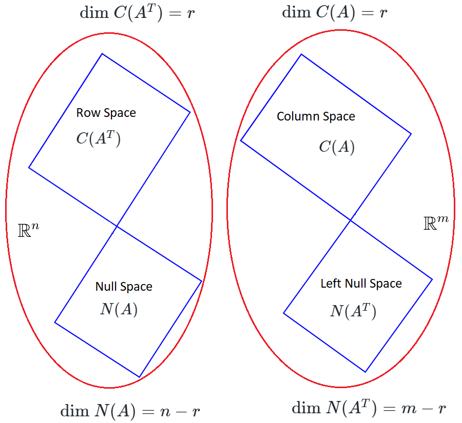

4 fundamental subspaces
Our \(4\) fundamental subspaces are,
Row Space
Say we have a \(m\times n\) matrix \(A\).Row Space of \(A\) is all the linear combination of rows of matrix \(A\).
We can also say that Row space of \(A\) is all the linear combination of columns of matrix \(A^T\).
So Row space of matrix \(A\) is the Column Space of matrix \(A^T\).
Row space is \(C(A^T)\)
Left Null Space
Say we have a \(m\times n\) matrix \(A\).Then Left Null Space is the Null Space of \(A^T\), so,
For a matrix \(A\) the Left Null space is the space of all \(\vec{x}\) that solves \(A^T\vec{x}=\vec{0}\)
Dimensions of fundamental spaces
Dimensions of Column space
Say we have a \(m\times n\) matrix \(A\) and \(\text{Rank}(A)=r\).Here we have \(n\) columns and each column have \(m\) components.
So every column vector of matrix \(A\) \(\in\mathbb{R}^m\).\(\text{Rank}(A)=r\) so we know that we have \(r\) independent columns in matrix \(A\).
So the Column space of matrix \(A\) lives in \(\mathbb{R}^m\).
The Column space of \(A\) is spanned by these \(r\) independent columns vectors of matrix \(A\).
So then dimension of the column space is \(r\).
\[\text{dim }C(A)=r\]
Dimensions of Null space
Say we have a \(m\times n\) matrix \(A\) and \(\text{Rank}(A)=r\).For matrix \(A\) the Null space is the space of all \(\vec{x}\) that solves \(A\vec{x}=\vec{0}\).
We know that \(A\) is a \(m\times n\) matrix, so \(\vec{x}\in\mathbb{R}^n\).\(\text{Rank}(A)=r\) so we know that we have \(r\) independent columns in matrix \(A\).
So the Null space of matrix \(A\) lives in \(\mathbb{R}^n\).
So there are \(n-r\) dependent column vector(special solution) in matrix \(A\).
The Null space is spanned by these \(n-r\) dependent column vector of matrix \(A\).
So then dimension of the null space of matrix \(A\) is \(n-r\).
\[\text{dim }N(A)=n-r\]
Dimensions of Row space
Say we have a \(m\times n\) matrix \(A\) and \(\text{Rank}(A)=r\).Here we have \(m\) rows and each row have \(n\) components.
So every row vector of matrix \(A\) \(\in\mathbb{R}^n\).\(\text{Rank}(A)=\text{Rank}(A^T)\) [proof]
So the Row space of matrix \(A\) lives in \(\mathbb{R}^n\).
\(\text{Rank}(A)=r\Rightarrow\) \(\text{Rank}(A^T)=r\) so we know that we have \(r\) independent columns in matrix \(A^T\).
OR say that we have \(r\) independent rows in matrix \(A\).
The Row space of \(A\) is spanned by these \(r\) independent row vectors of \(A\).
OR say that, the Column space of \(A^T\) is spanned by these \(r\) independent columns vectors of \(A^T\).
So then dimension of the row space of matrix \(A\) is \(r\).
\[\text{dim }C(A^T)=r\]
Dimensions of Left Null space
Say we have a \(m\times n\) matrix \(A\) and \(\text{Rank}(A)=r\).For a matrix \(A\) the Left Null space is the space of all \(\vec{x}\) that solves \(A^T\vec{x}=\vec{0}\).
We know that \(A^T\) is a \(n\times m\) matrix, so \(\vec{x}\in\mathbb{R}^m\).\(\text{Rank}(A)=\text{Rank}(A^T)\) [proof]
So the Left Null space of matrix \(A\) lives in \(\mathbb{R}^m\).
\(\text{Rank}(A)=r\Rightarrow\) \(\text{Rank}(A^T)=r\) so we know that we have \(r\) independent columns in matrix \(A^T\).
OR say that we have \(r\) independent rows in matrix \(A\).
So there are \(m-r\) dependent column vector(special solution) in matrix \(A^T\).
The Left Null space is spanned by these \(m-r\) dependent column vector in matrix \(A\).
So then dimension of the left null space is \(m-r\).
\[\text{dim }N(A^T)=m-r\]

Basis of fundamental spaces
Basis of Column space
Say we have a \(m\times n\) matrix \(A\) and \(\text{Rank}(A)=r\).Here we have \(r\) independent columns in \(A\).We talked about Basis of Column space [HERE]
And these independent columns are the basis of Column space.
Basis of Null space
Say we have a \(m\times n\) matrix \(A\) and \(\text{Rank}(A)=r\).Here we have \(n-r\) special solutions.We talked about Basis of Null space [HERE]
And these special solutions are the basis of Null space.
Basis of Row space
Say we have a \(m\times n\) matrix \(A\) and \(\text{Rank}(A)=r\).\(\text{Rank}(A)=r\Rightarrow\) \(\text{Rank}(A^T)=r\) so here we have \(r\) independent columns in \(A^T\).Example,
So we can also say that there are \(r\) independent rows in \(A\).
And these independent rows of \(A\) are the basis of Row space.
-
Say \(A=\begin{bmatrix}
1 & 2 & 3 & 1\\
1 & 1 & 2 & 1\\
1 & 2 & 3 & 1\\
\end{bmatrix}\)
It's reduced row echelon form is,
\(R=\begin{bmatrix} \color{blue}{\fbox{1}} & \color{blue}{0} & \color{red}{1} & \color{red}{1} \\ \color{blue}{0} & \color{blue}{\fbox{1}} & \color{red}{1} & \color{red}{0} \\ 0 & 0 & 0 & 0 \\ \end{bmatrix}\)
Here we can clearly see that rank\((r)\) is \(2\).
Our row operation preserve the row space.
It mean our row space is unaffected during row operations while reducing it to reduced row echelon form.
Because we are just taking the linear combinations of rows and linear combinations of two vectors in row space remains in row space.
But column space might changed.
Here the basis for Row space is first \(r\) row vectors in \(R\).
So our basis are \(\begin{bmatrix} 1\\0\\1\\1\\ \end{bmatrix}\), \(\begin{bmatrix} 0\\1\\1\\0\\ \end{bmatrix}\)
Basis of Left Null space
Say we have a \(m\times n\) matrix \(A\) and \(\text{Rank}(A)=r\).For matrix \(A\) the Left Null space is the space of all \(\vec{x}\) that solves \(A^T\vec{x}=\vec{0}\).
When we reduce \(A\) in reduced row echelon form, then # zero rows are \(m-r\).
So we have \(m-r\) special solutions for our Left null space.
And these special solutions are the basis of Left Null space.
To find the basis we can take the transpose of \(A\) and find the null space of \(A^T\).
But this is not intuitive for row space perspective.
So what we do is while reducing the matrix \(A\) to the reduced row echelon form\((R)\), by using Gauss-Jordan elimination technique we can keep the track of our action.
And it will result in a matrix say \(E\).
\(EA=R\)
then last \(m-r\) rows of \(E\) will be our basis for Left null space.
Example,
-
Say \(A=\begin{bmatrix}
1 & 2 & 3 & 1\\
1 & 1 & 2 & 1\\
1 & 2 & 3 & 1\\
\end{bmatrix}\)
Now let's find it's reduced row echelon form Gauss Jordan,
\(\left[ \begin{array}{cccc|ccc} 1 & 2 & 3 & 1 & 1 & 0 & 0 \\ 1 & 1 & 2 & 1 & 0 & 1 & 0 \\ 1 & 2 & 3 & 1 & 0 & 0 & 1 \\ \end{array} \right] \)
\(R_2 \leftarrow R_2 - R_1\) and \(R_3 \leftarrow R_3 - R_1\)
\(\left[ \begin{array}{cccc|ccc} \color{blue}{\fbox{1}} & 2 & 3 & 1 & 1 & 0 & 0 \\ 0 & -1 & -1 & 0 & -1 & 1 & 0 \\ 0 & 0 & 0 & 0 & -1 & 0 & 1 \\ \end{array} \right] \)
\(R_2 \leftarrow -R_2 \)
\(\left[ \begin{array}{cccc|ccc} \color{blue}{\fbox{1}} & 2 & 3 & 1 & 1 & 0 & 0 \\ 0 & \color{blue}{\fbox{1}} & 1 & 0 & 1 & -1 & 0 \\ 0 & 0 & 0 & 0 & -1 & 0 & 1 \\ \end{array} \right] \)
\(R_1 \leftarrow R_1 -R_2\)
\(\left[ \begin{array}{cccc|ccc} \color{blue}{\fbox{1}} & \color{blue}{0} & \color{red}{1} & \color{red}{1} & -1 & 2 & 0 \\ \color{blue}{0}& \color{blue}{\fbox{1}} & \color{red}{1} & \color{red}{0} & 1 & -1 & 0 \\ 0 & 0 & 0 & 0 & \color{green}{-1} & \color{green}{0} & \color{green}{1} \\ \end{array} \right] \)
What is special in \(\begin{bmatrix} \color{green}{-1}\\\color{green}{0}\\\color{green}{1}\\ \end{bmatrix}\)?
It's suggesting that if we take \(\color{green}{-1}\cdot R_1 + \color{green}{0}\cdot R_2 + \color{green}{1}\cdot R_3\) of \(A\) then we will get \(\vec{0}\).
So our left null space is,
\[c\cdot \begin{bmatrix} \color{green}{-1}\\\color{green}{0}\\\color{green}{1}\\ \end{bmatrix}; \quad c\in\mathbb{R}\]
Join our Slack discussion forum